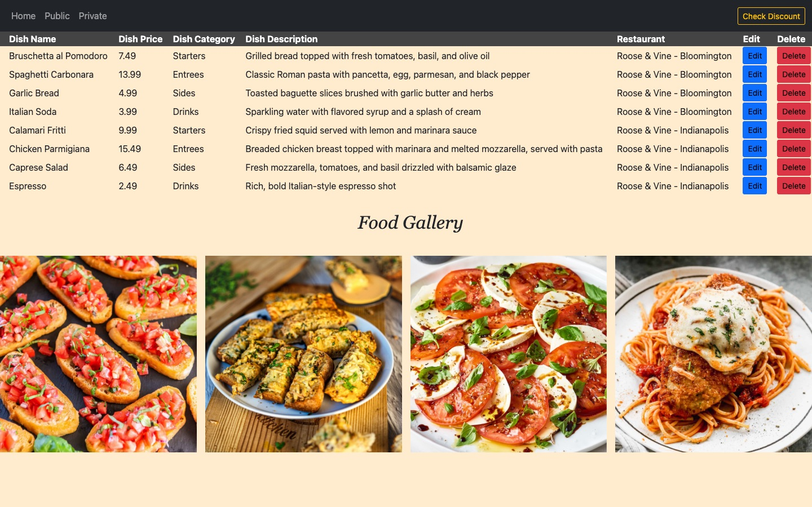
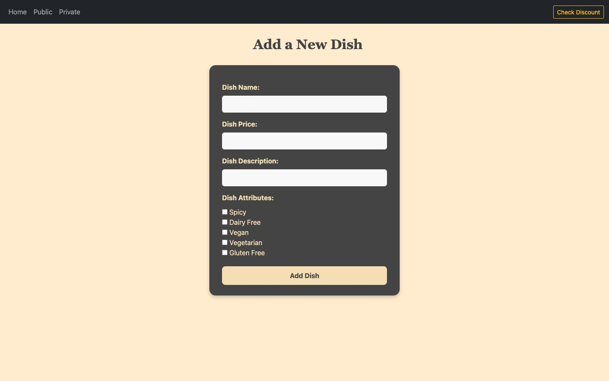

Why I built it
A warm-up for capstone: one app that uses every tool together.
Before capstone teams started their big projects, every student built the same back end on their own: a MySQL database of restaurants and dishes, and the PHP pages that read and change it. The front end was ours to design.
The point was to get comfortable using all of the tools together: the database, the code, GitHub branches and a live deployment.
My role
Roose & Vine was my individual project for INFO-I494, the first semester of my capstone. I designed and built it myself, from the database to the interface.
What I built
- Restaurant pages for each location, Bloomington and Indianapolis
- A menu page that lists every dish from the database, with its price, category and restaurant
- A private page for adding new dishes, plus editing and deleting the ones already there
Because everyone shared the same back end, the design was where I could make it my own. I gave it the feel of a warm Italian restaurant: a cream background, serif headings and a gallery of the food.




Building it
PHP only, no Python.
Roose & Vine is a PHP and MySQL web app, deployed on Railway. The rule was PHP only, with no Python, so I learned how PHP connects to the database, handles a form and builds a page from the results.
I also worked the way a team would: in branches on GitHub, merging each feature into main when it was done.
Reflection
The biggest thing I took from Roose & Vine was the workflow: a database, the code that talks to it, GitHub branches and a live deployment, all working together. HobbyBloom, our team's capstone app, runs on the same PHP and MySQL setup, so I started that project already knowing how the pieces fit.